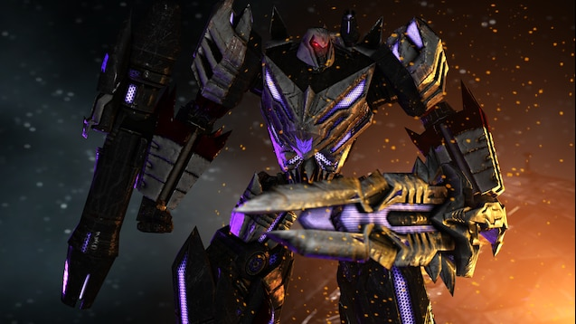

Megatron (War for cybetron/Fall of cybetron/Prime)

Megatron jest głównym antagonistą uniwersum Transformers „Aligned”, służąc
jako główny antagonista gry Transformers: War For Cybertron i
Transformers: Fall of Cybertron oraz serialu animowanego Transformers:
Prime z 2011 roku. Później powraca jako drugorzędny antagonista w filmie
Predacons Rising. Jest przywódcą Decepticonów oraz głównym wrogiem
Optimusa Prime, Bumblebee i Autobotów w ogóle. Pierwotnie był górnikiem o
imieniu D-16, który uczestniczył na Arenie Gladiatorów w Kaon. To zwróciło
uwagę urzędnika ds. danych Iacona, Oriona Paxa, który poparł jego sprawę i
dał mu możliwość zwrócenia się do Wysokiej Rady Cybertronu. Jednak jego
mroczniejsze ambicje były mocno dominujące, a kiedy Orion otrzymał tytuł
Prime, Megatron przysiągł przejąć kontrolę nad całym Cybertronem, czyniąc
świat niezdatnym do zamieszkania. Przeniósł swoją chęć podboju i wojny na
Ziemię i postanowił dalej walczyć z Autobotami.
Osobowość:
Podczas serialu Megatron był intrygujący, zaciekły, egoistyczny,
sadystyczny i okrutny. Był bardzo manipulujący i przekonujący, ponieważ
był gotowy zmobilizować armię Cybertronian do swojej sprawy i zdobyć
lojalność od kilku osób, takich jak Dreadwing. Megatron zajmował się
głównie zdobywaniem władzy i eliminował każdego, kto stanąłby mu na
drodze, jak Cylas, Airachnid i Predaking. Nie chciał też wycofywać się z
walki, prawdopodobnie dzięki swojej karierze jako gladiator na Kaon. Ale
może być nieco tolerancyjny, o czym świadczy jego tolerancja wobec
początkowej decyzji Dreadwinga, by ukarać swojego brata Skyquake'a, jednak
jest tolerancyjny wyłącznie wobec tych, którzy okazali mu ponadprzeciętną
lojalność. Był wyjątkowo uprzedzony, wierząc, że całe życie w galaktyce
jest pod życiem Cybertronian. Jego jedyną odkupieńczą cechą było to, że
nigdy nie dyskryminował różnych rodzajów Cybertronian. Przysiągł zniszczyć
swojego starego wroga, Optimusa Prime, i jego zwolenników Autobotów za
wszelką cenę, kontynuując wojnę na Ziemi. Pomimo swojego okrucieństwa,
Megatron ma poczucie honoru, ponieważ chce osobiście walczyć i zabić
Optimusa, a każdy, kto ośmieli się ingerować, odpowie przed nim np. gdy
pokazał swoją brutalność wobec Starscreama.